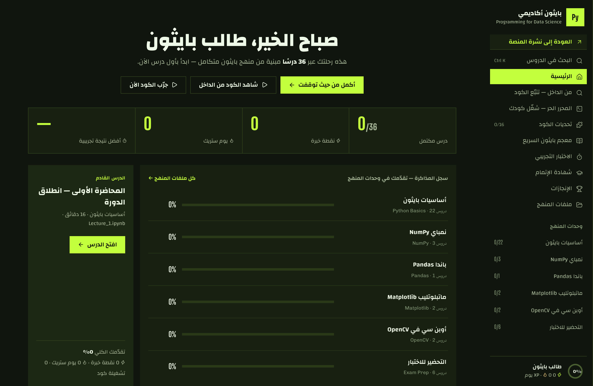
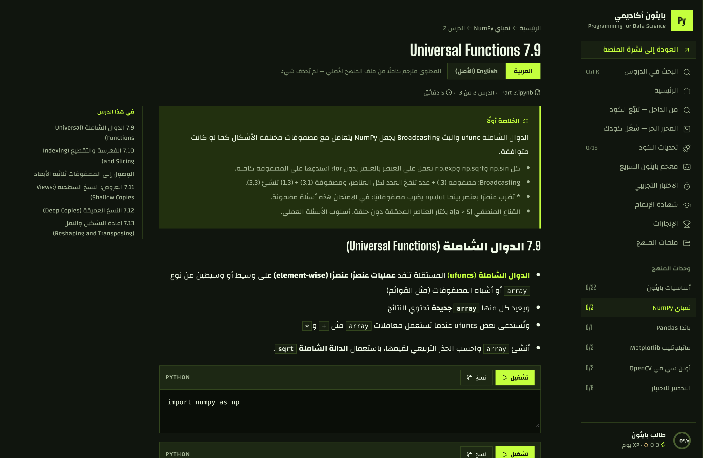
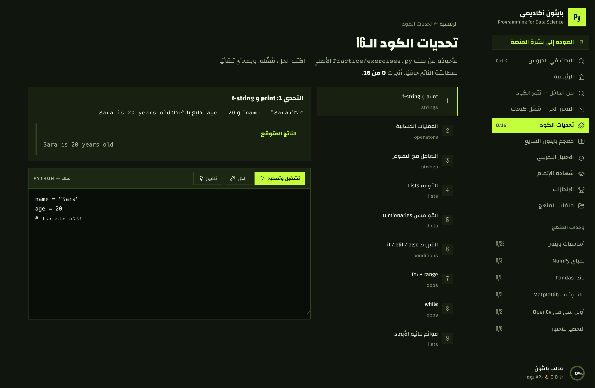
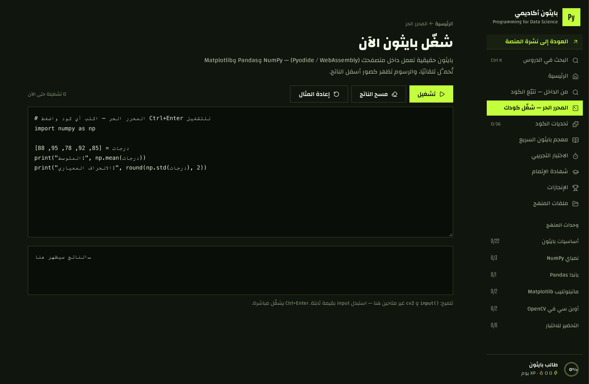
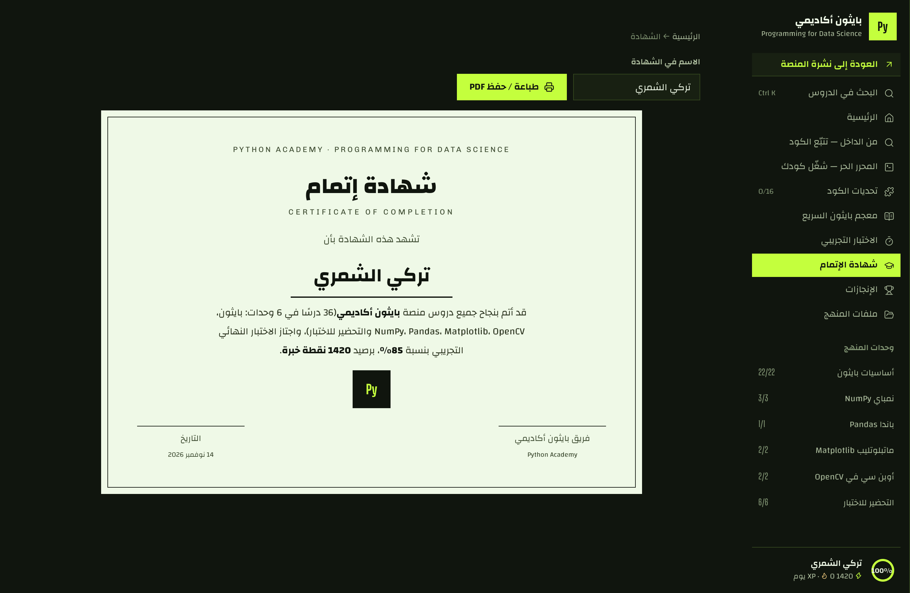

مسار البرمجة
أساسيات بايثون
PYTHON BASICS
من الطباعة والمتغيرات إلى الأصناف والبيئات الافتراضية — دروس مرقمة كما في ملفات المنهج، بشرح عربي حول الكود الأصلي.
22درسًا

ست وحدات من ملفات المنهج الأصلي: 36 درسًا بشرح عربي كامل، و16 تحدي كود يصحح نفسه، وكل كتلة كود تعمل بايثون حقيقية داخل المتصفح.
مساران يبدآن من الصفر: البرمجة أولًا، ثم الأرقام والبيانات. كلاهما من ملفات المنهج نفسها.
من الطباعة والمتغيرات إلى الأصناف والبيئات الافتراضية — دروس مرقمة كما في ملفات المنهج، بشرح عربي حول الكود الأصلي.

الأرقام والرسوم والصور: المصفوفات والبث، DataFrames الحقيقية، المخططات، ثم معالجة الصور بأوبن سي في.

هذا ليس نموذجًا تسويقيًا: نص درس حقيقي من ملفات المنهج، بشرحه العربي وكيوده وناتجه — كما يقرؤه الطالب.
import numpy as np numbers = np.array([1, 4, 9, 16, 25, 36]) np.sqrt(numbers)[1. 2. 3. 4. 5. 6.]
النص أعلاه منسوخ من ملف المنهج الأصلي كما هو: الكود والناتج بالإنجليزية حرفيًا، والشرح العربي حولهما.


16 تحديًا تكتب حلّه داخل المنصة، وتتحقق من الناتج فورًا — مع تلميحات متدرجة وحلول نموذجية عند التعثر.
كل كتلة كود زرّ تشغيل حقيقي؛ بايثون تعمل عبر WebAssembly، وNumPy وPandas وMatplotlib جاهزة دون تثبيت.
اختبار تجريبي مؤقت بحل نموذجي كما في القاعة، وشهادة إتمام باسم الطالب عند إكمال المنهج.
ست وحدات، و36 درسًا مرقمة كما في الملفات الأصلية. كل مجلد يفتح على بدايته.
من الطباعة والمتغيرات حتى الأصناف والبيئات الافتراضية.
المصفوفات، الفهرسة والتقطيع، العمليات الموجهة، البث.
DataFrames والسلاسل وتحليل البيانات الحقيقية.
مخططات الخط والأعمدة والتشتت، ثم الاتجاه الكائني المتقدم.
معالجة الصور: القراءة، الفلاتر، الكشف عن الوجوه.
اختبار تجريبي بحل نموذجي، امتحان المنتصف وماضيه، والنهائي بمفتاح الحل.
ملاحظة صريحة: وحدة أوبن سي في وinput() معطّلان داخل المتصفح، وتظهر الملاحظة العلنية عند زر التشغيل.

36 درسًا في ست وحدات؛ التقدم يُسجَّل تلقائيًا في شريط الوحدات.
اختبار مؤقت كما في القاعة؛ الدرجة المطلوبة 60% فأعلى، وتظهر في الشهادة.
تُطبع PDF باسمك وختم Py وتوقيع المنصة — جاهزة للسيرة الذاتية.
المنصة مخصصة لكل متعلّم عربي يريد إتقان بايثون؛ كل الدروس والتحديات والاختبار متاحة داخلها دون تسعير.
لا. بايثون تعمل داخل المتصفح عبر WebAssembly (Pyodide)، والناتج يظهر تحت كل كتلة كود مباشرة.
نعم؛ التطبيق متجاوب من 320px، والتحديات والمحرر والاختبار تعمل على الشاشات الصغيرة.
تشغيل وحدة OpenCV واستخدام input() معطّل داخل المتصفح، وتظهر ملاحظة صريحة عند زر التشغيل بدل فشل صامت.
داخل المنصة بمبدّل اللغة: الكود والناتج يبقيان كما وصلَا، والشرح يتنقل بين العربية والإنجليزية.
تحذير المنصة: ملفات التحضير لا تُنشر علنًا قبل المراجعة؛ والاختبار التجريبي متاح مؤقتًا كما في القاعة.
نُسِخ محتوى الدروس من ملفات المنهج الأصلي بتنسيقه، وحُفظ الكود حرفيًا، وشرحه عربيًا كاملًا؛ الملفات الإنجليزية الأصلية متاحة داخل المنصة بمبدّل اللغة.
منصة تعليمية لطلاب المنهج: دروس تفاعلية، تحديات مصححة آليًا، اختبار تجريبي مؤقت، وشهادة إتمام.
خاتمة النشرة: ابدأ من الدرس الأول